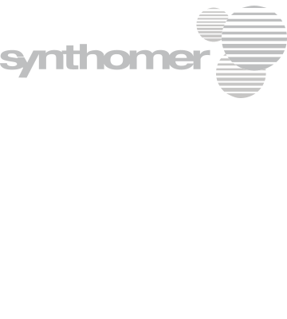

Formaline opslag

Gew.% Concentratie :
Opslag temp. in °C :
Minimum
Toe te voegen water berekenen:
Concentratie berekenen:
Huidige concentratie (wt%) :
Volume in de tank (m³) :
Temp. van de tank (°C) :
Berekende dichtheid (kg/m³) :
Berekende hoeveelheid (ton) :
Gewenste concentratie (wt%):
Toe te voegen water (ton):